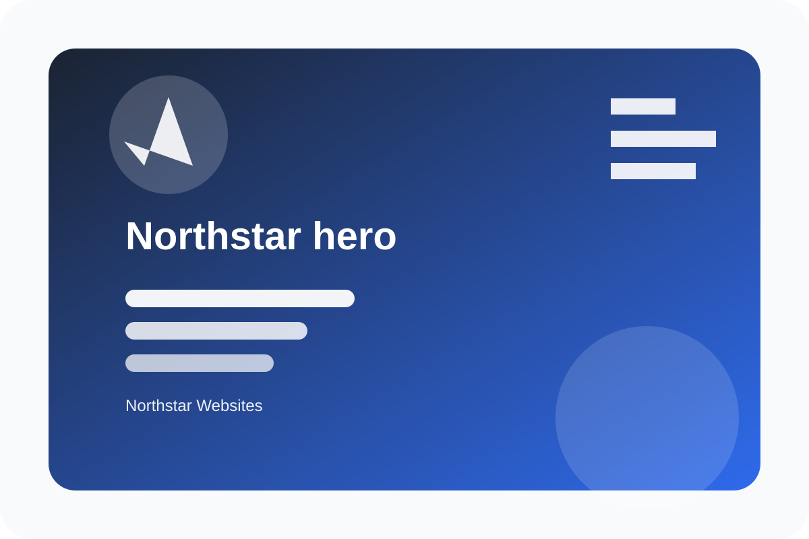
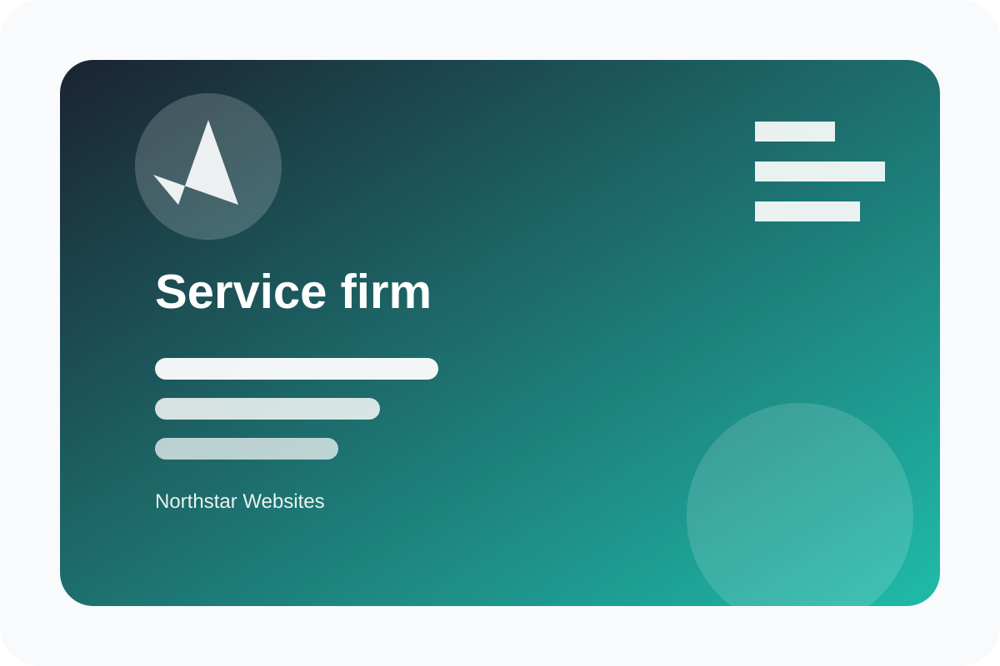
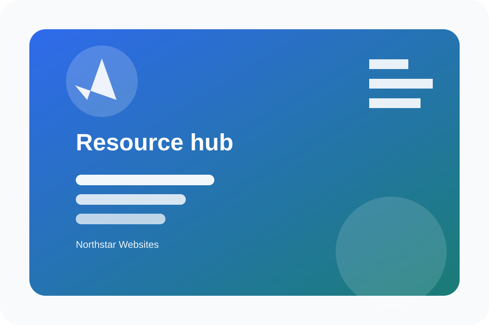
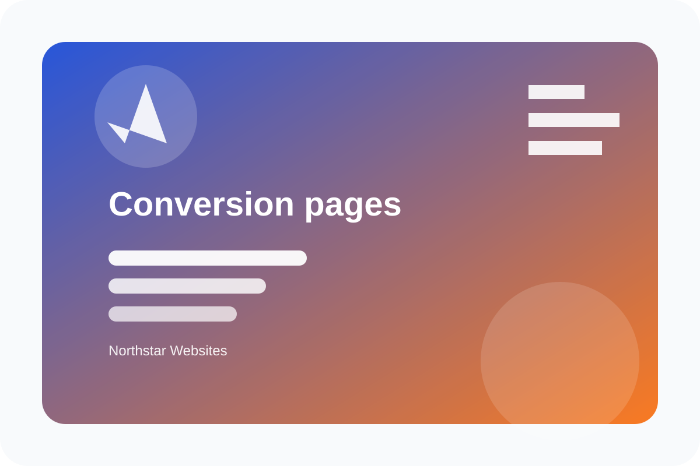
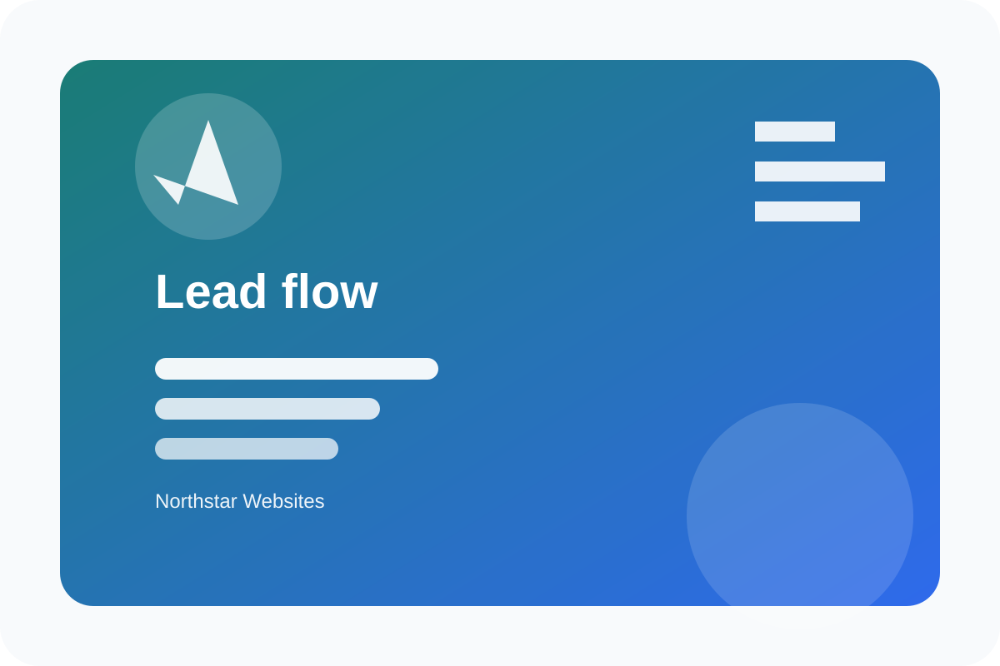
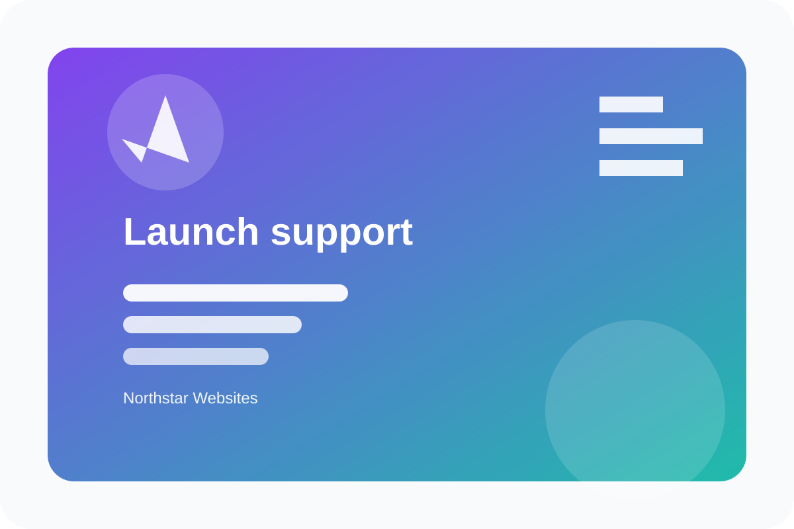
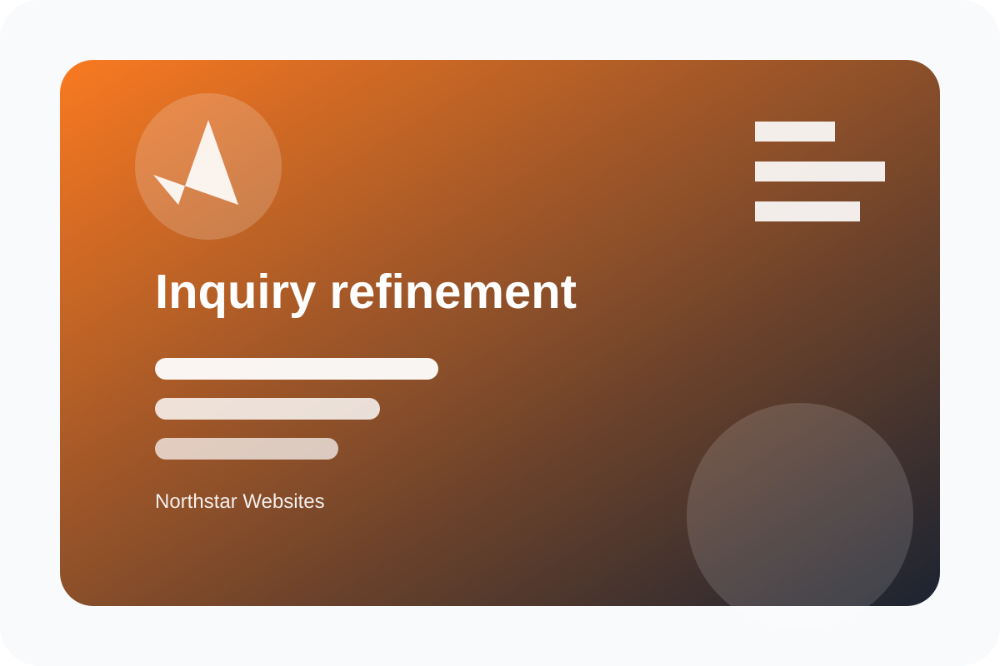
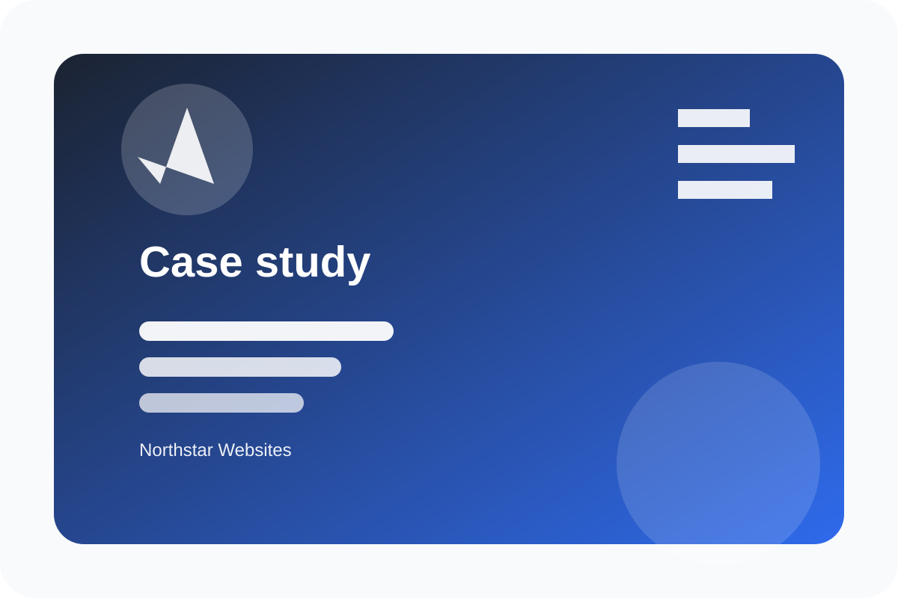

Service Firm Rebuild
A clearer service architecture with direct inquiry paths and easier editorial maintenance.
Northstar Websites
Northstar Websites plans, designs, builds, and supports polished WordPress sites with clear services, purposeful content, accessible interactions, and practical conversion paths.

Featured work
A clearer service architecture with direct inquiry paths and easier editorial maintenance.
Editorial article cards, topic navigation, and structured calls to action for a knowledge-heavy team.
Reusable WordPress page sections for services, FAQs, proof, and contact flows.
Private submission storage, admin review, exports, and owner notifications.
Positioning
Northstar Websites brings structure to service-business websites: concise messaging, direct navigation, clear service detail, useful resources, private inquiry handling, and a build system that keeps source files and production assets separated.
The result is a calm, content-forward theme that can adapt to consultants, local providers, professional practices, and business-to-business teams.
Services
Each service can stand alone or combine into a full planning, design, development, launch, and support engagement.

strategy
Clarify goals, audience needs, content priorities, and conversion paths before design starts.

design
Create polished, responsive interfaces that make services easy to understand and act on.

development
Build maintainable WordPress themes with clean templates, local assets, and practical editor support.

integration
Connect forms, content flows, analytics-ready events, and operational pages without runtime clutter.

support
Prepare the handoff, document key workflows, and support updates after the site goes live.

optimization
Refine important pages so visitors can compare services, ask better questions, and contact with confidence.
Process
Clarify goals, audiences, current friction, and the pages that matter most.
Create reusable sections, accessible navigation, and a visual system that fits the business.
Package the site, verify the build, and leave the owner with a maintainable content system.
Work in focus

Strategy
A clearer service architecture with direct inquiry paths and easier editorial maintenance.

Design
Editorial article cards, topic navigation, and structured calls to action for a knowledge-heavy team.

Development
Reusable WordPress page sections for services, FAQs, proof, and contact flows.

Integration
Private submission storage, admin review, exports, and owner notifications.

Support
Documentation, update routines, and practical handoff resources for site owners.

Results
A focused contact experience that asks for useful context without overburdening visitors.

Case study pattern
The challenge is common: important services are spread across unclear pages, visitors do not know where to begin, and the owner needs a site that is easier to update.
Before and after
Engagement options
A clear scope can include planning, design, theme development, launch preparation, support, or a targeted mix of those services.
A clear scope can include planning, design, theme development, launch preparation, support, or a targeted mix of those services.
A clear scope can include planning, design, theme development, launch preparation, support, or a targeted mix of those services.
Customer experience
You gather goals, content, examples, and operational needs so early choices are grounded.
The work moves through visible sections, reusable patterns, review points, and practical decisions.
The site includes documentation, maintainable assets, and support-ready admin records.
Proof
The pages make it easier to explain services without hiding detail or burying the contact step.
Reusable sections reduce the amount of page-specific code and keep the theme easier to maintain.
Owners get a system they can understand, not just a design they can admire.
Resources

Planning
A practical list of goals, content, examples, and decision points that makes the first conversation more useful.

WordPress
How to organize services, proof, resources, and contact paths so visitors can move with less friction.

Design
A compact guide to component thinking for teams that need a polished site they can keep current.

Support
The checks that help reduce surprises before a new service website goes live.
FAQ
Northstar Websites starts with a focused discovery conversation about goals, audiences, content, current pain points, and what the website needs to help visitors do.
Yes. Some projects are targeted improvements to structure, content, forms, accessibility, or design consistency rather than a full rebuild.
Useful context includes your primary services, important pages, examples of sites you admire, current content status, preferred timeline, and any tools the site must support.
The theme is structured to support clear service content. Project work can include content planning, page outlines, and editing guidance without inventing unsupported business claims.
Layouts, navigation, forms, cards, and footer sections are designed mobile-first so the experience remains usable on small screens.
Launch support can include handoff notes, editor guidance, small follow-up adjustments, and recommendations for responsible ongoing maintenance.
Submissions are stored privately in WordPress admin areas with nonce validation, sanitization, exports, and owner notification support.
Next step
Use the contact form to share what is changing, what is confusing visitors, and what the next version of the site needs to support.